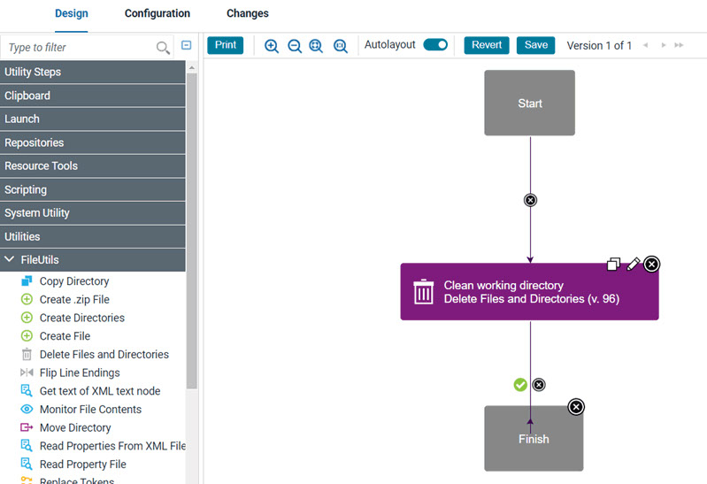
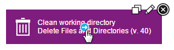
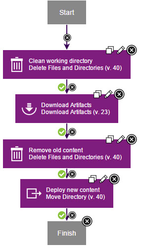
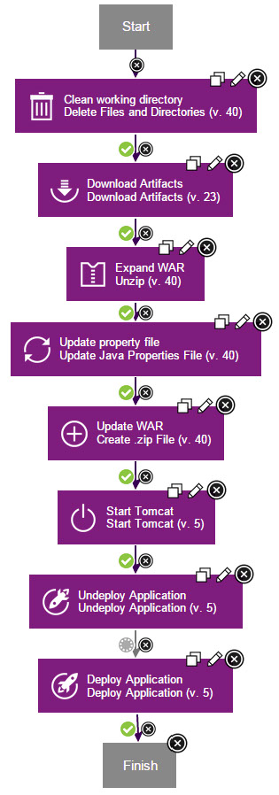
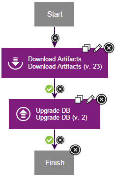

Lesson 2: Creating component processes
Component processes describe automated tasks that run on components. Component processes can deploy, install, uninstall, update, or run other tasks on a component.
About this task
- Generic processes run outside the context of components or applications. Generic processes are
shown on the top-level Processes tab. You can use generic processes in these
instances, for example:
- In conjunction with a number of different component processes that do not fit well into a component template
- When you want to run processes that directly affect IBM DevOps Deploy (Deploy) agents that are unrelated to component, such as changing the agent configuration
- Application processes run within the context of applications. In many cases, application processes call component processes. For example, an application process can call the component processes that deploy their associated components.
- Component processes run tasks on a single component, such as deploying it, uninstalling it, or running configuration tasks on it.
Processes are lists of steps and connections between those steps. Each step is an individual command that runs on a target computer. Steps can manipulate files, run system commands, download files, and run programs. Plug-ins contribute most of these steps; plug-ins are available that work with many different types of software.
Each component must have at least one component process to deploy or install the component. In this lesson, you create a deployment process for each of the three components. Later, you create an application process that calls these component processes to deploy each component.
Creating a component process for the web component
The component process for the web component downloads the most recent version of the component artifacts and puts those artifacts in the correct folder.
About this task
Procedure
-
Add a step to clean any files out of the working directory.
The process runs within a working directory. To ensure that you are using the most recent version of the files in the web component, run a command to clean the working directory:
-
Click the Edit icon
 , and the
Edit Properties window opens. In the Name field, specify
the name to be Clean working directory.
, and the
Edit Properties window opens. In the Name field, specify
the name to be Clean working directory.
The new step is displayed as a box in the process editor. The process editor looks like the following figure:
-
Click the Edit icon
-
Add a step to download the latest version of the component artifacts.
The Download Artifacts step is used in most deployment processes. This step downloads the specified version of the component artifacts to the target computer. When you run the process, you will specify whether to use the most recent version of the component artifacts or a specific version.
-
Tip: When you drag the first step into a process editor, that step is automatically connected to the Start and Finish steps. When you drag subsequent steps into the process editor, place the cursor in the target position so that the connection arrow is highlighted, and then place the step. The new step is automatically connected. You can always change step locations and manually connect steps later.In the step palette, expand Repositories, and under Artifact/Deploy, drag the Download Artifacts step to the process editor.
-
Click the Edit icon , and in the
Edit Properties window, accept the default values; then, click
OK.
-

Results

Creating a component process for the application component
The application component consists of a single WAR file. This component process downloads the most recent version of the WAR file, updates values in the file, and deploys the file on the application server.
Procedure
Results

Creating a component process for the database component
The deployment process for the database component updates the database with sample values.
Procedure
Results

In this lesson, you created component processes to deploy the components.
You can use component processes to automate many different tasks on components. However, you generally do not run component processes directly; in most cases, you add them to application processes. Later in this tutorial, you will create an application process for these three component processes.
Processes consist of steps, which are provided by plug-ins. To see a list of plug-ins that are available, and for documentation on those plug-ins and steps, see: Deploy Plug-ins.